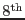
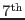
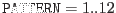
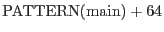
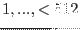
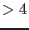
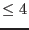

XMM-Newton Science Analysis System
epevents (epevents-6.50.1) [xmmsas_20170112_1337-16.0.0]
Pattern related information
The following table may serve as a quick reference to select certain pattern
types of recognized events (i.e. away from CCD edges, bad pixels etc.):
| PATTERN |
Meaning |
| 0 |
singles |
| 1 |
doubles in Y with Y(main) Y(secondary) Y(secondary) |
| 2 |
doubles in X with X(main)X(secondary) |
| 3 |
doubles in Y with Y(main) Y(secondary) Y(secondary) |
| 4 |
doubles in X with X(main)X(secondary) |
| 5-8 |
triples |
| 9-12 |
quadruples |
| 128 |
singles at CCD window (RAWX=1, RAWX=64, RAWY=200) |
| |
or close to bad pixels |
| 205 |
doubles at CCD window or bad pixels |
| 206 |
triples at CCD window or bad pixels |
| 207 |
quadruples at CCD window or bad pixels |
Note: as of version 6.30.4 PATTERN values of 128 have been changed to 0
(i.e.  bit is not set anymore for singles), and PATTERN values
of 205 have been changed to 1-4
(i.e.  and bit are not set anymore for doubles)!
Secondary events of those valid doubles, triples, and quadruples
(
) have
 (as listed above),
i.e. bit set.
- For the pattern codes in PAT_ID and PATTERN
the following bit-wise storing is used:
| PAT_ID |
| bit |
value |
Meaning |
| 16 |
32768 |
free for additional pattern related flag |
| 15 |
16384 |
- " - |
| 14 |
8192 |
- " - |
| 13 |
4096 |
PAT_ORI first digit (x-coordinate) |
| 12 |
2048 |
- " - |
| 11 |
1024 |
PAT_ORI second digit (y-coordinate) |
| 10 |
512 |
- " - |
| 9 |
256 |
PAT_IND:  (telemetry limit) |
| ... |
... |
- " - |
| 1 |
1 |
- " - |
| PATTERN |
| bit |
value |
Meaning |
| 8 |
128 |
sign of PAT_TYP |
| 7 |
64 |
sign of PAT_IND |
| 6 |
32 |
|
used to flag PAT_TYP  |
| 5 |
16 |
|
if bit 6, then use next 5 bits |
| 4 |
8 |
MOS code numbers 0 - 12 |
to store PAT_TYP - 5 |
| 3 |
4 |
a combination of |
hence, max storage: PAT_TYP = 36 |
| 2 |
2 |
PAT_TYP  and |
- " - |
| 1 |
1 |
PAT_ORI |
- " - |
Note: as of version 6.30.4 PATTERN values of 128 have been changed to 0
(i.e. bit is not set anymore for singles), and PATTERN values
of 205 have been changed to 1-4
(i.e. and bit are not set anymore for doubles)!
- Creation of event quality flags in column FLAG.
epevents
makes use of the common MOS/pn event related flag code
(see [3]) and uses the following bits
(other flags are set by the epframes
task):
| FLAG |
| bit |
value |
Meaning (information) |
| 1 |
0x2 |
INVALID_PATTERN |
| 2 |
0x4 |
CLOSE_TO_CCD_WINDOW |
| 5 |
0x20 |
CLOSE_TO_ONBOARD_BADPIX |
| 6 |
0x40 |
CLOSE_TO_BRIGHTPIX (not on-board) |
| 8 |
0x100 |
CLOSE_TO_DEADPIX (not on-board) |
| 16 |
0x10000 |
OUT_OF_FOV |
| bit |
value |
Meaning (rejection) |
| 19 |
0x80000 |
COSMIC_RAY |
| 21 |
0x200000 |
ON_BADPIX |
| 22 |
0x400000 |
SECONDARY |
| 23 |
0x800000 |
TRAILING |
| total |
0xfa0000 |
EPN rejection mask |
XMM-Newton SOC/SSC -- 2017-01-12